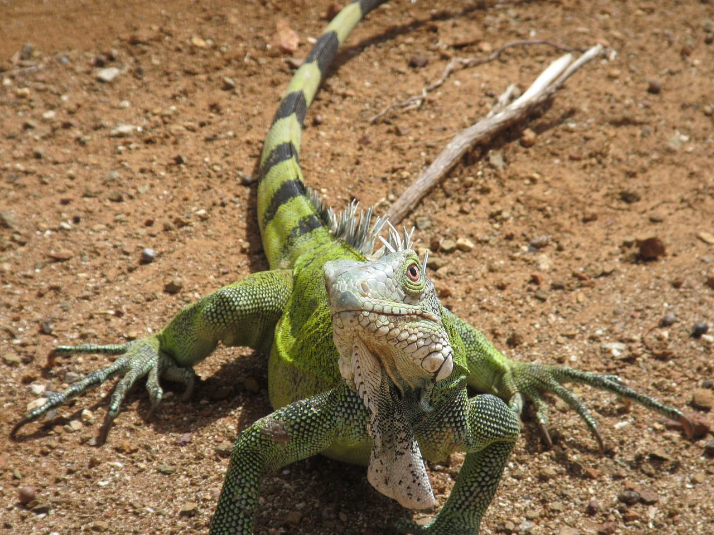
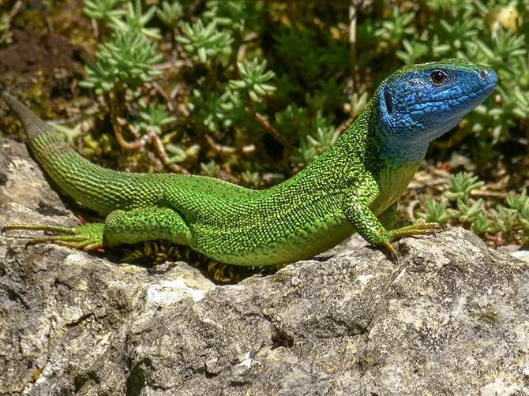

Tienen la cabeza ovalada,dientes filosos,cuatro patas , piel con escamas, suelen pesar entre 50-150KG y suelen medir entre 2,5cm-3 m dependiendo del ejemplar.
Saber más
Suelen alcanzar unos 10 años de vida. Su capacidad de estabilizar ecosistemas, al integrar un eslabón clave de la cadena trófica, hace de su presencia un beneficio para todos.
Saber másAlgunas de las curiosidades de los lagartos son las siguientes:
| 1 | Nombre | Tamaño | Peso | 2 | Lagarto azul de gorgona | 5.1 cm | 5g | 3 | Camaleón | 15-68,5cm | 10-120g |
|---|---|---|---|
| 4 | Chuckwalla | 15 cm | 24-315g |